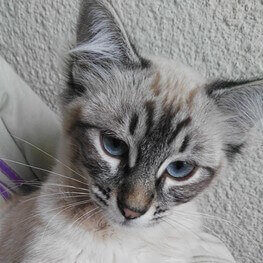

AMAR
Sexo: Hembra
Edad: 4 año(s) y 4 mes(es)
Tamaño: Mediano
Tipo de pelo: Corto
Espacio: No necesario
Le gusta estar acompañada
ADOPTA A UNA PATITA ¡Encuentra a tu compañero Ideal!
Dales una oportunidad, un nuevo hogar. Devuelveles la alegria a su vida y la tuya.
-
 AMAR
AMAR
Hembra | 4 año(s) y 4 mes(es) -
ANITA
Hembra | 2 año(s) y 8 mes(es) -
 SALY
SALY
Hembra | 4 año(s) y 5 mes(es)
-
BOBY
Macho | 3 año(s) y 10 mes(es) -
COCO
Macho | 5 año(s) y 2 mes(es) -
GUTY
Macho| 3 año(s) y 10 mes(es)
-
JERRY
Macho | 5 año(s) y 3 mes(es) -
LOLA
Hembra | 2 año(s) y 7 mes(es) -
SPIKE
Macho| 4 año(s) y 1 mes(es)
-
 Orlando
Orlando
Macho | 5 año(s) y 3 mes(es)ORLANDO
Sexo: Macho
Edad: 4 mes(es)
Tamaño: Mediano
Tipo de pelo: Corto
Espacio: No necesario
Sociable con todos Georgie
Hembra | 6 mes(es)GEORGIE
Sexo: Hembra
Edad: 6 mes(es)
Tamaño: Cachoro
Tipo de pelo: Corto
Entrenada para hacer
sus necesidades DARLA
DARLA
Hembra | 1 año(s) y 1 mes(es)